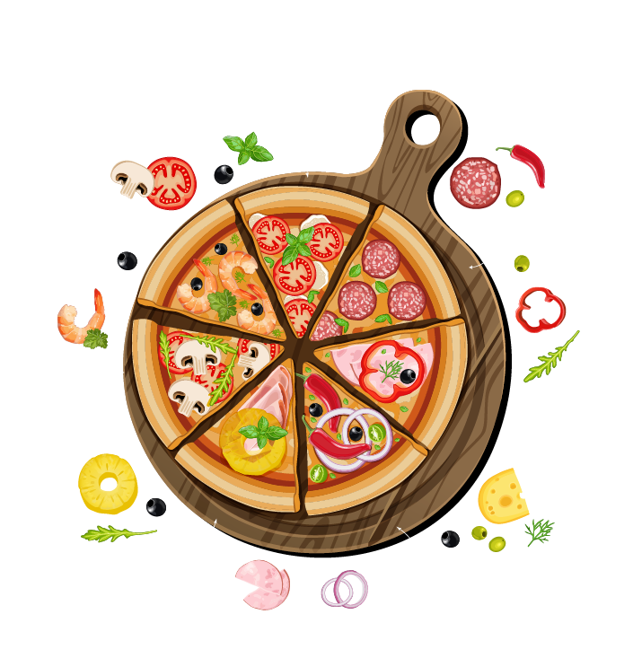
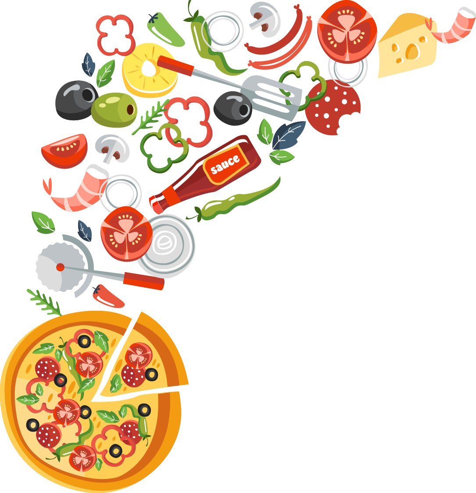

Приготуємо смачнющу піцу!
Тонка, соковита, м'яка, ніжна, тепла, ароматна - це все про неї, про піцу! Ідеальне поєднання продуктів: тягнеться сир і капає сік з помідорів - чи це не рай для гурмана? Пропоную вам приготувати піцу разом! Побалуйте внутрішнього ласунчика
Тобі знадобляться такі інгредієнти для приготування тіста:
- мука — 300 г,
- вода — 220 мл,
- сіль — 1 чайна ложка,
- сухі дріжджі — 6 г,
- оливкова олія — 2 столових ложки.
Залий теплою водою дріжджі, посоли суміш, ретельно перемішай. До розчину дріжджів додай оливкову олію та муку. Заміси тісто. Постав тісто у тепле місце на півгодини, аби воно як слід піднялося.


Тобі знадобляться такі інгредієнти для начинки:
- кетчуп,
- твердий сир,
- шинка/салямі,
- орегано,
- чорні оливки.
Змасти корж кетчупом. Натри сир та злегка присип ним тісто. Приправ орегано — спеція додасть піці духмяного аромату. Поріж шинку/салямі невеличкими шматочками та рівномірно виклади на піцу. Поріж чорні оливки кружальцями, виклади на піцу. Розігрій духовку до 180 °С і запікай піцу 15-20 хвилин. Присип натертим сиром та відправ у духовку ще на 5 хвилин. Головне — слідкуй, аби піца не підгоріла.